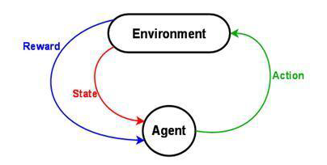
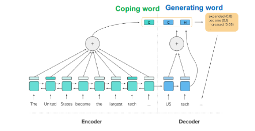
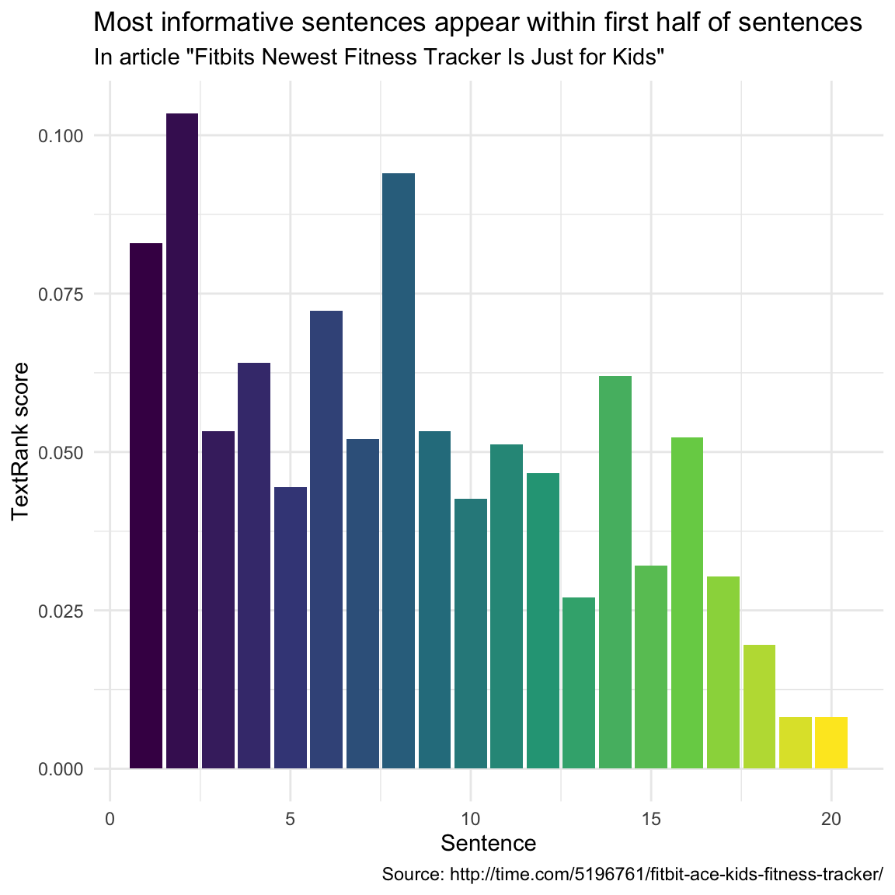
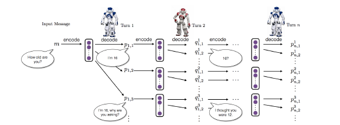
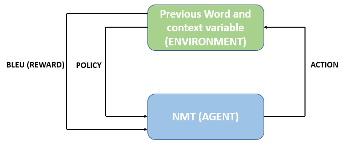

# set options
options(stringsAsFactors = F)
# install libraries
install.packages(c("tidytext", "tidyverse", "textrank", "rvest", "ggplot2"))
# install klippy for copy-to-clipboard button in code chunks
install.packages("remotes")
remotes::install_github("rlesur/klippy")Reinforcement Learning and Text Summarization in R

Introduction
This tutorial introduces the concept of Reinforcement Learning (RL) (see Sutton and Barto; Wu et al.; Paulus, Xiong, and Socher), and how it can be applied in the domain of Natural Language Processing (NLP) and linguistics.

This tutorial is aimed at beginners and intermediate users of R with the aim of showcasing how RI works. The aim is not to provide a fully-fledged analysis but rather to show and exemplify selected useful methods associated with RI.
The entire R Notebook for the tutorial can be downloaded here. If you want to render the R Notebook on your machine, i.e. knitting the document to html or a pdf, you need to make sure that you have R and RStudio installed and you also need to download the bibliography file and store it in the same folder where you store the Rmd file.
Preparation and session set up
This tutorial is based on R. If you have not installed R or are new to it, you will find an introduction to and more information how to use R here. For this tutorials, we need to install certain packages from an R library so that the scripts in this tutorial are executed without errors. Before continuing, please install the packages by running the code below this paragraph. If you have already installed the packages mentioned below, then you can skip ahead ignore this section. To install the necessary packages, simply run the following code - it may take some time (between 1 and 5 minutes to install all of the libraries so you do not need to worry if it takes some time).
For this tutorial we will be primarily requiring four packages: tidytext for text manipulations, tidyverse for general tasks, textrank for the implementation of the TextRank algorithm and rvest to scrape through an article to use as an example. For this analysis an article for Time has been selected.
Now that we have installed the packages, we activate them as shown below.
# set options
options(stringsAsFactors = F) # no automatic data transformation
options("scipen" = 100, "digits" = 12) # suppress math annotation
# activate packages
library(tidytext)
library(tidyverse)
library(textrank)
library(rvest)
library(ggplot2)
# activate klippy for copy-to-clipboard button
klippy::klippy()Once you have installed R and RStudio and also initiated the session by executing the code shown above, you are good to go.
Reinforment Learning
Reinforcement Learning enables a machines and software agents to independently determine the optimal behavior depending on a specific concept to enhance the overall performance. The system requires a reward feedback to learn its behavior which is known as reinforcement signal. The schematic diagram of Reinforcement Learning is provided below: -

Any RL framework comprises of 3 major components:
- Action determines all possible moves that the agent can make which is normally expressed as a mathematical function.
- State it is an explicit and quick circumstance that the agent can find itself in posed by the environment or any future circumstance
- Reward it is the feedback input from the environment which measure the achievement or failure of the agent’s activities.
The are three broad categories of RL:
- Value Based which determines the optimal value function and it is the maximum value achievable under any policy.
- Policy Based which identifies the optimal policy achieving maximum future reward
- Model Based involves a model which predicts attributes or provides representation of the environment
Without going into the mathematical intricacies of RL we will focus on possible applications of deep RL to linguistic data this tutorial. In its current form, RL plays a pivotal role in various Natural Language Processing (NLP) applications some of which are:
- Article Summarisation
- Question Answering (QA)
- Dialogue Generation
- Dialogue System
- Knowledge-based QA
- Machine Translation
- Text Generation
In the following sections we will explore some use cases of RL and interpret how deep RL can implement them.
Text Summarisation
A deep reinforced model for text summarisation involves sequence of input tokens x={x1,x2,…,xn} and produces a sequence of output (summary) tokens. A schematic presentation of the process is shown below:

For the article summarisation objective the deep RL has the following components:
- Action which involves a function ut which copies and generates summary output yt
- State it encapsulates the hidden states of encoder and previous outputs
- Reward which generates a rough score determining the performance of the summarisation
Text summarisation (see Mihalcea and Tarau) is highly critical in extracting important information from large texts.
In case of text summarisation there are broadly two categories:
- Extractive Summarisation
- Abstractive Summarisation
In case of Extractive Summarisation words and sentences are scored according to a specific metric and then utilizing that information for summarizing based copying or pasting the most informative parts of the text.
On the other hand Abstractive Summarisation involves building a semantic representation of the text and then incorporating natural language generation techniques to generate text highlighting the informative parts of the parent text document.
Here, we will be focusing on an extractive summarisation method called TextRank which is hinged upon the PageRank algorithm which was developed by Google to rank websites based on their importance.
The TextRank Algorithm
TextRank is a graph-based ranking algorithm for NLP. Graph-based ranking algorithms evaluate the importance of a vertex within a graph, based on global information extracted recursively from the entire graph. When one vertex is associated with another it is actually casting a vote for that vertex. The higher the number of votes cast for a vertex, the higher importance of that vertex.
In the NLP case it is necessary to define vertices and edges. In this tutorial we will be using sentences as vertices and words as edges. Thus sentences with words present in many other sentences will have higher priority
# define url
url <- "http://time.com/5196761/fitbit-ace-kids-fitness-tracker/"
# read in data
site <- read_html(url)
article <- html_text(html_nodes(site, "p,h1,h2,h3"))
# inspect
article[1] "Fitbit’s Newest Fitness Tracker Is Just for Kids"
[2] "Fitbit is launching a new fitness tracker designed for children called the Fitbit Ace, which will go on sale for $99.95 in the second quarter of this year."
[3] "The [tempo-ecommerce src=”http://www.amazon.com/Fitbit-Activity-Tracker-Purple-Stainless/dp/B07B9DX4WB” title=”Fitbit Ace” context=”body”] looks a lot like the company’s Alta tracker, but with a few child-friendly tweaks. The most important of which is Fitbit’s new family account option, which gives parents control over how their child uses their tracker and is compliant with the Children’s Online Privacy Protection Act, or COPPA. Parents must approve who their child can connect with via the Fitbit app and can view their kid’s activity progress and sleep trends, the latter of which can help them manage their children’s bedtimes."
[4] "Like many of Fitbit’s other products, the Fitbit Ace can automatically track steps, monitor active minutes, and remind kids to move when they’ve been still for too long. But while Fitbit’s default move goal is 30 minutes for adult users, the Ace’s will be 60 minutes, in line with the World Health Organization’s recommendation that children between the ages of five and 17 get an hour of daily physical activity per day. Fitbit says the tracker is designed for children eight years old and up."
[5] "Fitbit will also be introducing a Family Faceoff feature that lets kids compete in a five-day step challenge against the other members of their family account. The app also will reward children with in-app badges for achieving their health goals. Fitbit’s new child-friendly fitness band will be available in blue and purple, is showerproof, and should last for five days on a single charge."
[6] "The Ace launch is part of Fitbit’s broader goal of branching out to new audiences. The company also announced a new smartwatch on Tuesday called the Versa, which is being positioned as an everyday smartwatch rather than a fitness-only device or sports watch, like some of the company’s other products."
[7] "Above all else, the Ace is an effort to get children up and moving. The Centers for Disease Control and Prevention report that the percentage of children and adolescents affected by obesity has more than tripled since the 1970’s. But parents who want to encourage their children to move already have several less expensive options to choose from. Garmin’s $79.99 Vivofit Jr. 2, for example, comes in themed skins like these Minnie Mouse and Star Wars versions, while the wristband entices kids to move by reflecting their fitness achievements in an accompanying smartphone game. The $39.99 Nabi Compete, meanwhile, is sold in pairs so that family members can work together to achieve movement milestones."
[8] "More Must-Reads from TIME"
[9] "Contact us at letters@time.com" Next the article is loaded into a tibble. Then tokenisation is implemented according to sentences. Although this tokenisation is fully perfect it has a lower number of dependencies and is suitable for this case. Finally we add column for sentence number and switch the order of the columns.
tibble::tibble(text = article) %>%
tidytext::unnest_tokens(sentence, text, token = "sentences") %>%
dplyr::mutate(sentence_id = row_number()) %>%
dplyr::select(sentence_id, sentence) -> article_sentences
# inspect
article_sentences# A tibble: 20 × 2
sentence_id sentence
<int> <chr>
1 1 fitbit’s newest fitness tracker is just for kids
2 2 fitbit is launching a new fitness tracker designed for children …
3 3 the [tempo-ecommerce src=”http://www.amazon.com/fitbit-activity-…
4 4 the most important of which is fitbit’s new family account optio…
5 5 parents must approve who their child can connect with via the fi…
6 6 like many of fitbit’s other products, the fitbit ace can automat…
7 7 but while fitbit’s default move goal is 30 minutes for adult use…
8 8 fitbit says the tracker is designed for children eight years old…
9 9 fitbit will also be introducing a family faceoff feature that le…
10 10 the app also will reward children with in-app badges for achievi…
11 11 fitbit’s new child-friendly fitness band will be available in bl…
12 12 the ace launch is part of fitbit’s broader goal of branching out…
13 13 the company also announced a new smartwatch on tuesday called th…
14 14 above all else, the ace is an effort to get children up and movi…
15 15 the centers for disease control and prevention report that the p…
16 16 but parents who want to encourage their children to move already…
17 17 garmin’s $79.99 vivofit jr. 2, for example, comes in themed skin…
18 18 the $39.99 nabi compete, meanwhile, is sold in pairs so that fam…
19 19 more must-reads from time
20 20 contact us at letters@time.com Next we will tokenize based on words.
article_words <- article_sentences %>%
tidytext::unnest_tokens(word, sentence)
article_words# A tibble: 466 × 2
sentence_id word
<int> <chr>
1 1 fitbit’s
2 1 newest
3 1 fitness
4 1 tracker
5 1 is
6 1 just
7 1 for
8 1 kids
9 2 fitbit
10 2 is
# ℹ 456 more rowsWe have one last step left is to remove the stop words in article_words as they are prone to result in redundancy.
article_words <- article_words %>%
dplyr::anti_join(stop_words, by = "word")
article_words# A tibble: 225 × 2
sentence_id word
<int> <chr>
1 1 fitbit’s
2 1 fitness
3 1 tracker
4 1 kids
5 2 fitbit
6 2 launching
7 2 fitness
8 2 tracker
9 2 designed
10 2 children
# ℹ 215 more rowsUsing the textrank package it is really easy to implement the TextRank algorithm. The textrank_sentences function requires only 2 inputs:
- A data frame with sentences
- A data frame with tokens which are part of each sentence
article_summary <- textrank_sentences(
data = article_sentences,
terminology = article_words
)
# inspect the summary
article_summaryTextrank on sentences, showing top 5 most important sentences found:
1. fitbit is launching a new fitness tracker designed for children called the fitbit ace, which will go on sale for $99.95 in the second quarter of this year.
2. fitbit says the tracker is designed for children eight years old and up.
3. fitbit’s newest fitness tracker is just for kids
4. like many of fitbit’s other products, the fitbit ace can automatically track steps, monitor active minutes, and remind kids to move when they’ve been still for too long.
5. the most important of which is fitbit’s new family account option, which gives parents control over how their child uses their tracker and is compliant with the children’s online privacy protection act, or coppa.Lets have a look where these important sentences appear in the article:
library(ggplot2)
article_summary[["sentences"]] %>%
ggplot(aes(textrank_id, textrank, fill = textrank_id)) +
geom_col() +
theme_minimal() +
scale_fill_viridis_c() +
guides(fill = "none") +
labs(
x = "Sentence",
y = "TextRank score",
title = "Most informative sentences appear within first half of sentences",
subtitle = 'In article "Fitbits Newest Fitness Tracker Is Just for Kids"',
caption = "Source: http://time.com/5196761/fitbit-ace-kids-fitness-tracker/"
)
Other Applications of RL
Dialogue Generation
In today’s digital world dialogue generation is a widely used application especially in chatbots. One widely used model in this regard is the Long Short Term Memory (LSTM) sequence-to-sequence (SEQ2SEQ) model. It is a neural generative model that maximizes the probability of generating a response given the previous dialogue. However SEQ2SEQ model has some constraints:
- They tend to generate highly generic responses
- Often they are stuck in an infinite loop of repetitive responses
This is where deep RL is much more efficient as it can integrate developer-defined rewards which efficiently mimics the true goal of chatbot development. In case of dialogue generation the component:
- Action which involves a function that generates sequences of arbitrary lengths
- State it comprises of previous 2 dialogue turns [pi,qi]
- Reward which determines the ease of answering, information flow and semantic coherence
The schematic diagram highlighting the dialogue simulation between 2 agents using deep RL is shown below:

Neural Machine Translation
Most of Neural Machine Translation (NMT) models are based encoder-decoder framework with attention mechanism. The encoder initially maps a source sentence x={x1,x2,…,xn} to a set of continuous representations z={z1,z2,…,zn} . Given z the decoder then generates a target sentence y={y1,y2,…,ym} of word tokens one by one. RL is used to bridge the gap between training and inference of of NMT by directly optimizing the loss function at training time. In this scenario the NMT model acts as the agent which interacts with the environment which in this case are the previous words and the context vector z available at each step t. This is a a policy based RL and in place of a state a policy will be assigned in every iteration. The critical components of the RL for NMT are discussed below:
- Policy which is a conditional probability defined by the parameters of the agent
- Action is decided by the agent based on the policy and it will pick up a candidate word from the vocabulary
- Reward is evaluated once the agent generates a complete sequence which in case of machine translation is Bilingual Evaluation Understudy (BLEU).BLEU is defined by comparing the generated sequence with the ground truth sequence.
The schematic of the overall process is depicted below:

Citation & Session Info
Majumdar, Dattatreya. 2024. Reinforcement Learning in NLP. Brisbane: The University of Queensland. url: https://ladal.edu.au/tutorials/reinfnlp.html (Version 2024.12.23).
@manual{Majumdar2024ta,
author = {Majumdar, Dattatreya},
title = {Reinforcement Learning in NLP},
note = {tutorials/reinfnlp/reinfnlp.html},
year = {2024},
organization = "The University of Queensland, Australia. School of Languages and Cultures},
address = {Brisbane},
edition = {2024.12.23}
}sessionInfo()R version 4.4.1 (2024-06-14)
Platform: aarch64-apple-darwin20
Running under: macOS Sonoma 14.6.1
Matrix products: default
BLAS: /Library/Frameworks/R.framework/Versions/4.4-arm64/Resources/lib/libRblas.0.dylib
LAPACK: /Library/Frameworks/R.framework/Versions/4.4-arm64/Resources/lib/libRlapack.dylib; LAPACK version 3.12.0
locale:
[1] en_US.UTF-8/en_US.UTF-8/en_US.UTF-8/C/en_US.UTF-8/en_US.UTF-8
time zone: Australia/Brisbane
tzcode source: internal
attached base packages:
[1] stats graphics grDevices utils datasets methods base
other attached packages:
[1] rvest_1.0.4 textrank_0.3.1 lubridate_1.9.3 forcats_1.0.0
[5] stringr_1.5.1 dplyr_1.1.4 purrr_1.0.2 readr_2.1.5
[9] tidyr_1.3.1 tibble_3.2.1 ggplot2_3.5.1 tidyverse_2.0.0
[13] tidytext_0.4.2
loaded via a namespace (and not attached):
[1] janeaustenr_1.0.0 utf8_1.2.4 generics_0.1.3 xml2_1.3.6
[5] stringi_1.8.4 lattice_0.22-6 hms_1.1.3 digest_0.6.37
[9] magrittr_2.0.3 evaluate_1.0.1 grid_4.4.1 timechange_0.3.0
[13] fastmap_1.2.0 jsonlite_1.8.9 Matrix_1.7-1 httr_1.4.7
[17] selectr_0.4-2 fansi_1.0.6 viridisLite_0.4.2 scales_1.3.0
[21] codetools_0.2-20 klippy_0.0.0.9500 cli_3.6.3 rlang_1.1.4
[25] tokenizers_0.3.0 munsell_0.5.1 withr_3.0.2 yaml_2.3.10
[29] tools_4.4.1 tzdb_0.4.0 colorspace_2.1-1 curl_5.2.3
[33] assertthat_0.2.1 vctrs_0.6.5 R6_2.5.1 lifecycle_1.0.4
[37] htmlwidgets_1.6.4 pkgconfig_2.0.3 pillar_1.9.0 gtable_0.3.6
[41] glue_1.8.0 data.table_1.16.2 Rcpp_1.0.13 xfun_0.49
[45] tidyselect_1.2.1 knitr_1.48 farver_2.1.2 htmltools_0.5.8.1
[49] igraph_2.1.1 SnowballC_0.7.1 labeling_0.4.3 rmarkdown_2.28
[53] compiler_4.4.1 References
Mihalcea, Rada, and Paul Tarau. “Textrank: Bringing Order into Text.” In Proceedings of the 2004 Conference on Empirical Methods in Natural Language Processing, 404–11.
Paulus, Romain, Caiming Xiong, and Richard Socher. “A Deep Reinforced Model for Abstractive Summarization.” arXiv Preprint arXiv:1705.04304.
Sutton, Richard S, and Andrew G Barto. Reinforcement Learning: An Introduction. MIT press.
Wu, Lijun, Fei Tian, Tao Qin, Jianhuang Lai, and Tie-Yan Liu. “A Study of Reinforcement Learning for Neural Machine Translation.” arXiv Preprint arXiv:1808.08866.